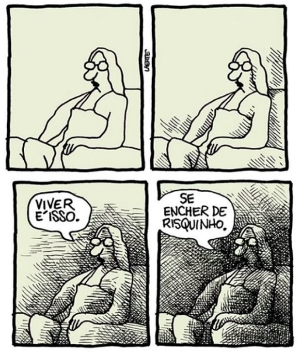

| Reconhecer quando as juventudes são afetadas por processos de discriminação por idade. | |
| Compreender como as juventudes percebem a velhice. | |
| Refletir sobre como as condições de vida das juventudes afetam suas perspectivas sobre o envelhecimento. |
Aprendemos na aula anterior que a juventude também pode ser afetada pelo idadismo de diferentes formas, frente às condições de vida de cada indivíduo jovem em sua trajetória. Portanto, é possível refletir nesse momento sobre as interferências dos processos discriminatórios por idade no modo como as juventudes constroem suas perspectivas para a velhice. Para isso, discutiremos as representações que pessoas mais jovens possuem sobre o envelhecimento, considerando suas realidades.
As reflexões sobre a condição juvenil na América Latina nos ajudam a entender como o idadismo afeta os jovens de maneiras específicas, especialmente em contextos marcados por desigualdades estruturais. A desvalorização da juventude, muitas vezes vista como "inexperiente" ou "imatura", é agravada por fatores como a precarização do trabalho, a falta de acesso à educação de qualidade e a exclusão digital. Ao mesmo tempo, a idealização da juventude como um período de vitalidade e produtividade pode criar expectativas irreais, pressionando os jovens a alcançar o sucesso de forma precoce e exacerbando conflitos intergeracionais.
Fonte: Laerte, imagem cedida pela autora.
Perceba na imagem que há uma associação entre o curso da vida e o envelhecimento do corpo. A charge nos provoca a pensar sobre o processo natural e inevitável que nos afeta ao envelhecer. Processo que não é apenas biológico, mas marcado pelos riscos da realidade vivida.
Mas, se viver é se encher de “risquinho", por qual razão tentamos evitar os traços do envelhecimento?
Na oposição que já mencionamos entre o jovem e o velho, a sociedade contemporânea tem produzido estereótipos que marcam a velhice como aquilo que é feio, ultrapassado e doente. Em oposição, o que é jovem está na esfera do bonito, do criativo e do saudável. A relação entre as gerações pode ser analisada por pelo menos duas perspectivas. Por um lado, toda juventude, por mais duradoura que seja, dará lugar à velhice. De outro, poderosos recursos de imagem e discurso são investidos na comunicação, na publicidade e na indústria, tendo como referência a diferenciação conflituosa entre o que é jovem e velho.
Vamos analisar a reportagem A pílula da juventude para perceber como o incentivo à busca pela juventude fortalece as disputas de significados sobre as gerações.
Observe como os investimentos da indústria da beleza estão voltados para promover uma estética anti-idade. O distanciamento entre as gerações está em grande medida baseado na promoção de uma carga negativa sobre o envelhecimento, como algo que deve ser evitado ou corrigido. Além disso, adjetivos negativos são constantemente relacionados à velhice. Analise os pontos a seguir e reflita sobre isso.
[a
velhice] é
quando a pessoa tá um pouco menons capaz do que a outra.
Débora, 29 anos, integrante de núcleo feminista, Boa Vista - RR em entrevista
realizada para pesquisa " Percepções das juventudes
roraimenses sobre o envelhecimento."
A "caucurice" [velhice] é não ter nenhum tipo de escuta aberta para
evolução.
Débora, 29 anos, integrante de núcleo feminista, Boa Vista - RR em entrevista
realizada para pesquisa " Percepções das juventudes
roraimenses sobre o envelhecimento."
Dá medo pras pessoas pensarem sobre isso, sobre envelhecer, sobre não
sei...ficar doente.
Davi, 25 anos, militante partidário, Boa Vista - RR em entrevista
realizada para pesquisa " Percepções das juventudes
roraimenses sobre o envelhecimento."
É fato que as marcas impressas pelo tempo no nosso corpo geram especificidades nos modos de vida, no entanto, perceba que quando pessoas jovens são questionadas sobre como elas percebem o envelhecimento, destacam-se visões estigmatizantes.
Diante desse cenário, é possível perceber o envelhecimento como uma possibilidade?
Há discussões nas ciências sociais que indicam que os mais jovens se sentem longe da morte, logo, também da velhice e da doença. É uma experiência que é reafirmada pela convivência com outras gerações e todos esses discursos que relacionam a velhice ao adoecimento.
“Jovens sentem-se longe da morte, também da velhice e da doença. Este fato é
objetivo,
na medida em que sua chance de
adoecer ou morrer é menor; mas também é experiencial, há uma sensação de
invulnerabilidade, de afastamento da morte, de
alteridade em relação a ela, que é condicionada pela convivência e contemporaneidade
com
membros adultos da família, com
pais e avós, com gerações passadas.”
Se buscarmos produzir um discurso contrário ao do envelhecimento como doença e incapacidade, podemos associar a velhice como uma possibilidade de uma vida longa e de qualidade. No entanto, quem pode viver mais? Há muitos fatores que são impeditivos para a longevidade das gerações mais jovens, são eles: a violência, questões sobre saúde mental, dificuldades no acesso aos serviços públicos e a falta de informação de qualidade, dentre outros elementos que colaboram para diminuir a expectativa de vida das juventudes.
"[A VELHICE] É como se estivesse muito perto do meu dedo e eu não pudesse tocar
ali."
Perceba que a jovem demonstra o sentimento de distanciamento da velhice. É como se, embora envelhecer seja um fato para todas as pessoas, no depoimento desta jovem a velhice é um destino inalcançável. A entrevistada é uma jovem mulher trans, que em seu relato demonstra como a expectativa de vida, expressa em dados estatísticos, é vivenciada na concepção de projetos de vida.
De acordo com dados da Associação Nacional de Travestis e Transexuais (Antra), a expectativa de vida média de uma pessoa trans no Brasil é de apenas 35 anos. Considerando esse dado, compreendemos como as perspectivas sobre o envelhecimento podem ser afetadas de acordo com as realidades e experiências vividas. Para saber mais sobre o contexto de pessoas idosas LGBTQIAPN+, conheça o projeto LGBT+60: Corpos que Resistem, disponível gratuitamente nas plataformas digitais. Clique aqui e assista ao trailer.
Se somarmos as estruturas de desigualdades e os estigmas relacionados ao envelhecimento, percebemos que o distanciamento entre juventude e velhice se alarga ainda mais. Vejamos os dados a seguir:
A existência de indicadores tão alarmantes nos mostra que os riscos que cercam as juventudes brasileiras são sentidos para além de uma disputa de significados sobre o que é ser jovem ou velho. A realidade toca a vida de determinados grupos sociais de forma truculenta e impossibilitadora. Considerando esse contexto, podemos adicionar mais uma questão nessa conversa:
A partir de cada realidade, como a perspectiva de envelhecer pode ser considerada, ou melhor, possibilitada?
Ao concentrar nossos esforços em entender os motivos pelos quais as gerações mais jovens não consideram o envelhecimento em seus projetos de vida, compreendemos que as políticas públicas existentes precisam de um tratamento específico para o público jovem, o que significa que as ações do Estado devem considerar todas as esferas da vida das juventudes: lazer, cultura, trabalho, educação, dentre outras.
As novas gerações, expostas a tantas violências e desigualdades, correm riscos tão desafiadores que suas perspectivas de vida são afetadas diretamente, principalmente no que se refere às suas projeções para o curso da vida.
Tendo em vista um futuro tão incerto e pouco estável, devemos considerar desenvolver alternativas para aproximar diferentes gerações e melhorar o relacionamento intergeracional.
Para isso, podemos produzir discursos mais positivos e aproximados da realidade sobre o que é viver a juventude e o direito de envelhecer, além de criar possibilidades para uma vida de qualidade que abrace todas as fases da vida.
Ao término dessa aula, esperamos que você possa compreender a urgência da construção de políticas para as juventudes que tenham a longevidade como perspectiva, incluindo questões de saúde pública e seguridade social. Para ver entusiasmo na possibilidade de uma vida longa e saudável, não precisamos negar as dificuldades presentes em qualquer momento da vida. Estarmos conscientes das condições sociais de pessoas jovens, adultas e idosas é o passo inicial para combater o idadismo que nos afeta cotidianamente.